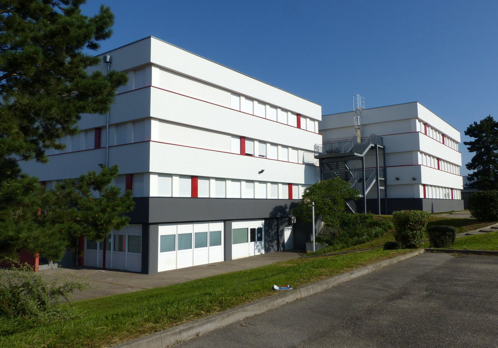
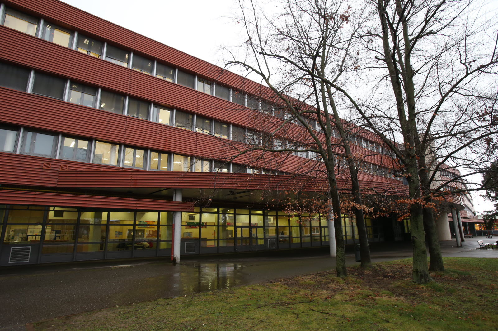
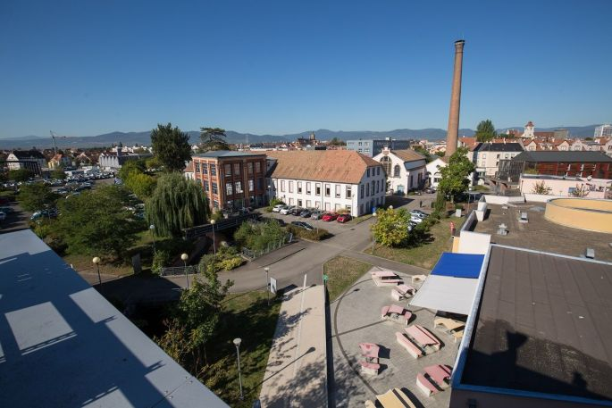

Mes années d'études
Le Collège
De fin 2015 à 2019, j'ai étudié prendant 4 années au collège Robert Schuman
Ce collège se situe en Alsace, plus précisement à Volgelsheim
J'y ai éffectué 4 années d'études, de ma 6ème à ma 3ème

Le Lycée
De fin 2019 à début 2022, j'ai étudié pendant 3 années au lycée polyvalent Blaise Pascal de Colmar
Durant ma première année de lycée, j'ai étudié dans une seconde générale et technologique avec l'option Sciences de l'ingénieur
Durant ma deuxième année, j'ai commencé étudier la formation Sciences et Technologies de l'Industrie et du Développement Durable (STI2D)
Durant ma troisième année j'ai approfondi ma formation et choisi l'option Système d'Information et Numérique (SIN)
Suite à ces 3 années, j'ai reçu mon Baccalauréat sciences et technologies de l'industrie et du développement durable

BUT Réseaux et Télécomunication
En fin 2022, j'ai commencé à étudié la formation BUT Réseaux et Télécomunication
La durée de cette formation est de 3 ans donc je la continurai jusqu'à fin 2025

Pourquoi ces études ?
Et bien pourquoi ces études, c'est tout simplement que depuis tout petit j'adore tout ce qui touche de près ou de loin à l'informatique.
Cette passion pour l'informatique m'est venu de mon grand-père, car quand j'étais petit j'allais avec lui à la décheterie, on récuperait des vieux ordinateurs, on les démontait puis nous regardions si il y avait encore des composants en états de fonctionner
C'est pour cela qu'au lycée de la seconde à la première, j'ai choisi la voie technologique et que je suis rentré dans la fillière STI2D et qu'après j'ai choisi l'option SIN
college,lycée(sti2d),stage 3eme,regarder parcoursup,entraineur de foot pitchoune,passions pour l'info depuis tout petit grace a papy,metier que je veux faire plus tard,